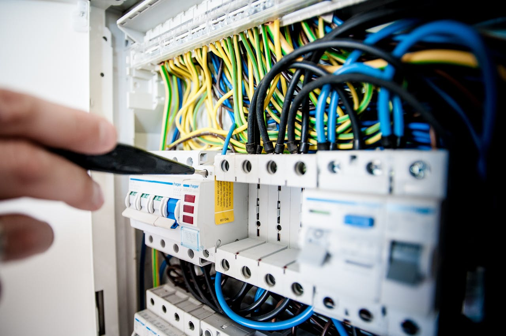

استكشاف أعطال الأجهزة المنزلية الشائعة: دليل خطوة بخطوة
طريقة منظمة لفهم أعراض العطل، تنفيذ الفحوصات الخارجية البسيطة، ومعرفة اللحظة التي تحتاج فيها إلى فني متخصص.
أعطال الأجهزة المنزلية جزء طبيعي من عمر أي جهاز، لكن طريقة التعامل مع العطل هي التي تحدد أحيانًا هل المشكلة ستظل بسيطة أم تتحول إلى إصلاح أكبر.
في هذا الدليل من أرشيف التوكيل للصيانة، نرتب أشهر الأعراض التي تظهر في الأجهزة المنزلية، ونوضح الفحوصات الخارجية البسيطة التي يمكن تنفيذها بأمان، ومتى يكون الأفضل التوقف عن التجربة وطلب فني متخصص.
الجهاز عطل فجأة؟
ابدأ بوصف المشكلة بدل التخمين في القطعة التالفة. اذكر نوع الجهاز والماركة والموديل والأعراض التي ظهرت، ويمكن لالتوكيل للصيانة مساعدتك في تحديد الخطوة التالية.
اطلب فحص الجهازما أشهر أعطال الأجهزة المنزلية؟
رغم اختلاف تصميم الغسالة والثلاجة وغسالة الأطباق والفرن وباقي الأجهزة، إلا أن كثيرًا من الأعطال تبدأ بأعراض متكررة يمكن ملاحظتها بسهولة.
- الجهاز لا يعمل: قد تكون المشكلة في مصدر الكهرباء أو القابس أو مفتاح التشغيل أو أحد المكونات الداخلية.
- تسريب المياه: يظهر غالبًا في الغسالات وغسالات الأطباق، وقد يرتبط بخرطوم أو وصلة أو انسداد أو مانع تسريب.
- أصوات واهتزازات غير طبيعية: قد تنتج عن عدم اتزان الجهاز أو جسم غريب أو مشكلة في أحد الأجزاء المتحركة.
- ضعف الأداء: مثل ضعف تبريد الثلاجة أو ضعف تصريف الغسالة أو عدم وصول الفرن إلى الحرارة المطلوبة.
- ظهور كود خطأ: في الأجهزة الإلكترونية الحديثة قد يعطي رمز الخطأ مؤشرًا مهمًا، لكن تفسيره يختلف حسب الموديل.
كيف تتعامل مع العطل بطريقة منظمة؟
- حدد العرض بدقة: ما الذي توقف عن العمل؟ وهل العطل دائم أم يظهر ويختفي؟
- راجع مصدر الطاقة أو المياه: افحص الأمور الخارجية الواضحة فقط، دون فتح أي لوحة كهربائية.
- راجع الإعدادات: تأكد من البرنامج ودرجة الحرارة وأي إعداد قد يكون تغير بالخطأ.
- ابحث عن انسداد أو جسم غريب ظاهر: خصوصًا في الفلاتر وفتحات التصريف التي يسمح دليل الجهاز بتنظيفها.
- سجل أي كود خطأ أو صوت غير معتاد: هذه التفاصيل تساعد الفني كثيرًا في التشخيص.
- توقف عند الأجزاء الخطرة: إذا احتاج الأمر إلى فك الغطاء أو التعامل مع كهرباء داخلية أو دائرة تبريد، اترك المهمة للمتخصص.
الثلاجة لا تبرد فجأة: ماذا تفعل؟
إذا توقفت الثلاجة عن التبريد، ابدأ بالفحوصات الخارجية. تأكد من وصول الكهرباء، وراجع إعداد درجة الحرارة، وتحقق من عدم وجود انسداد واضح في التهوية. إذا كان الجهاز يصدر أصواتًا غير طبيعية أو يعمل لفترات طويلة دون تحسن، فالأفضل طلب فحص فني.
- تأكد من أن القابس والقاطع يعملان بصورة طبيعية.
- راجع إعدادات التبريد ولا تعتمد على تغييرها عشوائيًا.
- افحص إحكام إغلاق الباب والجوان.
- تأكد من عدم تغطية فتحات توزيع الهواء داخل الثلاجة.
- لا تحاول فتح دائرة التبريد أو التعامل مع غاز التبريد بنفسك.
أعطال الغسالات الأوتوماتيك والحلول الأولية
الغسالات الأوتوماتيك من أكثر الأجهزة التي تظهر فيها أعراض واضحة يمكن وصفها بدقة. وفيما يلي أمثلة على أكثر الحالات شيوعًا:
| المشكلة | الفحص الأولي الآمن |
|---|---|
| الغسالة لا تعمل | تأكد من وصول الكهرباء وإغلاق الباب بشكل صحيح، ثم راجع البرنامج المختار. |
| لا تصرف المياه | افحص خرطوم الصرف بحثًا عن التواء أو انسداد ظاهر، ونظف الفلتر إذا كان تصميم الجهاز يسمح بذلك وفق الكتالوج. |
| اهتزاز قوي أو صوت مرتفع | تأكد من ثبات الغسالة على أرضية مستوية ومن توزيع الملابس داخل الحلة بصورة مناسبة. |
| لا تسحب المياه | تأكد من فتح مصدر المياه ومن عدم وجود التواء أو انسداد ظاهر في خرطوم الدخول. |
إذا استمرت المشكلة أو ظهرت رائحة احتراق أو تسريب كهربائي أو صوت ميكانيكي قوي، لا تواصل تشغيل الغسالة حتى يتم فحصها.
غسالة الأطباق تتوقف في منتصف البرنامج
توقف غسالة الأطباق قبل انتهاء الدورة قد يرتبط بعدة أسباب، لذلك لا يُفضل استبدال أي قطعة قبل التشخيص.
- قفل الباب: إذا لم يتعرف الجهاز على إغلاق الباب، قد لا تستمر الدورة.
- فلتر أو مسار تصريف مسدود: تراكم بقايا الطعام قد يؤثر على التصريف.
- مشكلة في التسخين: خلل في عنصر التسخين أو التحكم في الحرارة قد يؤثر على البرنامج.
- لوحة التحكم: بعض الأعطال الإلكترونية تحتاج إلى فحص متخصص وأدوات قياس.
أعطال الفريزر الشائعة
عندما يضعف تجميد الفريزر، راجع أولًا مصدر الطاقة وإعدادات الحرارة وإغلاق الباب وتدفق الهواء. التكديس الزائد قد يمنع وصول الهواء البارد إلى بعض المناطق.
أما إذا كان هناك تراكم ثلج غير طبيعي أو توقف المروحة أو استمرار ارتفاع الحرارة، فهذه مؤشرات تستحق فحصًا فنيًا بدل تفكيك الجهاز بشكل عشوائي.
أعطال السخان الكهربائي
من الأعراض التي تستحق الانتباه: عدم وجود مياه ساخنة، تغير واضح في درجة الحرارة، تسريب مياه، أو أصوات غير معتادة. بعض هذه الحالات قد ترتبط بعنصر التسخين أو الثرموستات أو صمام الأمان أو تراكم الرواسب.
متى يكون إصلاح الجهاز بنفسك غير مناسب؟
الفحص الخارجي البسيط شيء، والإصلاح الداخلي شيء آخر. لا تحاول تنفيذ إصلاح داخلي إذا كان يتطلب التعامل مع الكهرباء، لوحات التحكم، الضاغط، دائرة التبريد، الغاز، أو أجزاء ميكانيكية تحتاج إلى فك متخصص.
- وجود رائحة احتراق أو شرر.
- تكرار فصل القاطع الكهربائي عند تشغيل الجهاز.
- تسريب مياه بالقرب من توصيلات كهربائية.
- الحاجة إلى فك اللوحة أو المحرك أو الضاغط.
- الحاجة إلى قياس أو شحن دائرة التبريد.
- عدم قدرتك على تحديد سبب العطل بعد الفحوصات الخارجية.
التشخيص الصح يوفر وقت وتكلفة
بدل تغيير قطع بالتجربة، ابدأ بتشخيص العطل. التوكيل للصيانة يوفر خدمة صيانة للأجهزة المنزلية، مع إمكانية الزيارة المنزلية، أو الاستفسار عن استقبال الجهاز في مقر الشركة.
احجز فحص الجهازأسئلة شائعة
هل كل عطل في الجهاز يحتاج إلى تغيير قطعة؟
لا. بعض الأعطال تكون مرتبطة بإعدادات التشغيل أو الانسداد أو سوء التهوية أو مشكلة خارجية بسيطة. لذلك التشخيص قبل تغيير القطعة خطوة أساسية.
ماذا أفعل إذا ظهر كود خطأ على الغسالة؟
سجل الكود كما يظهر، ويفضل تصوير الشاشة، ثم راجع دليل الموديل. لا تفترض أن الكود يعني تغيير قطعة محددة دون فحص السبب.
هل يمكن تنظيف فلتر الغسالة بنفسي؟
في بعض الموديلات نعم، إذا كان الفلتر مصممًا للوصول إليه من المستخدم. افصل الكهرباء واتبع تعليمات دليل الجهاز، ولا تحاول فك أجزاء غير مخصصة للتنظيف الدوري.
متى أطلب فني صيانة؟
اطلب فنيًا عندما يستمر العطل بعد الفحوصات الخارجية، أو عندما تظهر مشكلة كهربائية أو ميكانيكية، أو عندما يحتاج الجهاز إلى فك داخلي أو قياسات متخصصة.
هل يمكن إحضار الجهاز إلى مقر التوكيل للصيانة؟
نعم، يمكنك الاستفسار عن إمكانية استقبال الجهاز في مقر الشركة، أو طلب زيارة منزلية إذا كانت طبيعة الجهاز والعطل تسمح بذلك.
عندك جهاز مش شغال؟
أرسل نوع الجهاز، الماركة، الموديل إن وجد، ووصف المشكلة أو كود الخطأ. فريق التوكيل للصيانة يساعدك في تحديد الخطوة المناسبة وطلب الخدمة.
احجز أو استفسر الآنهل تواجه مشكلة أو عطلاً في جهازك؟
تواصل مع فريق "التوكيل للصيانة" الآن للحصول على استشارة فنية وفحص منزلي فوري بأعلى معايير الدقة والأمان.